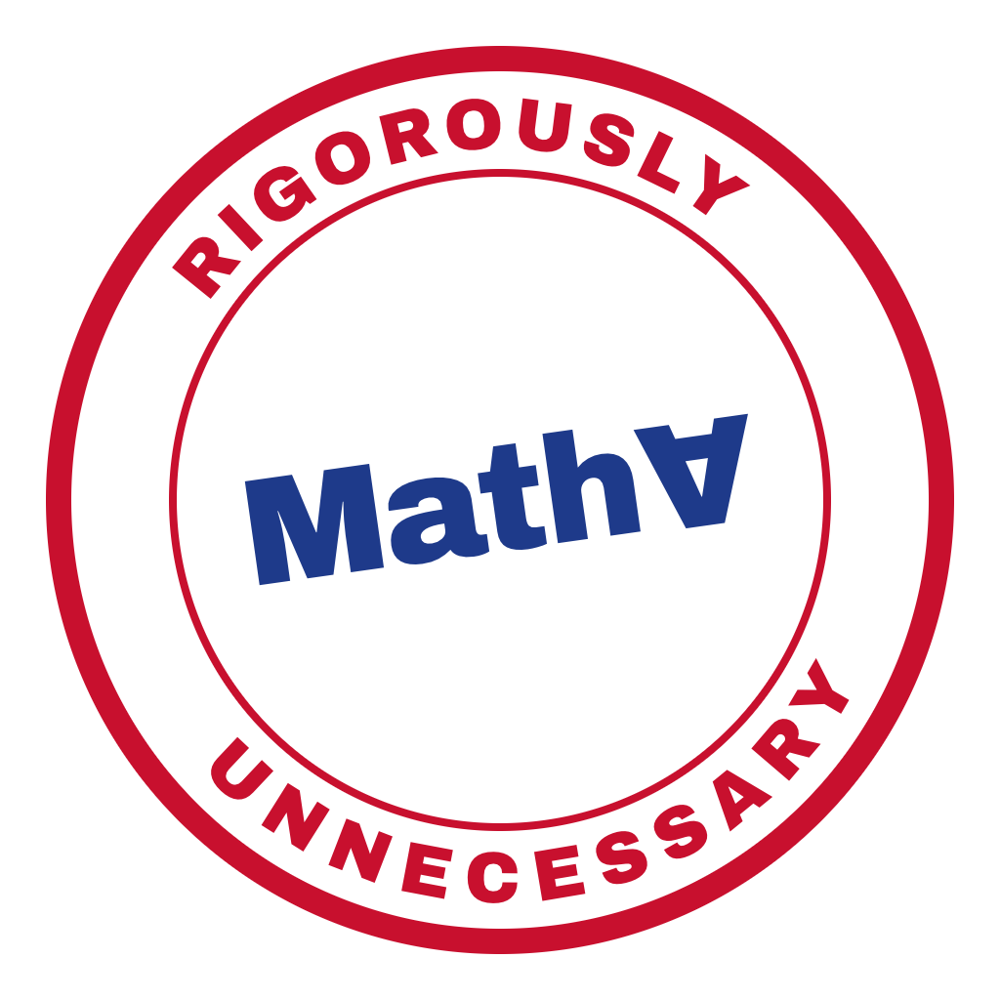

MathA Institute of Rigorously Unnecessary Mathematics
Rigorous mathematics for problems nobody asked mathematics to solve.
Papers
On the Existence of a Solution to the Italian Irregular Immigration Problem: A Spectral, Max-Flow and Optimal-Transport Approach
Johnny Silicio, Vittorio Mayellaro, Francesco Paoli Leonardi
Featuring the Barge Theorem (Teorema del Barcone), the ground state of outrage, and the Excluded Middle Theorem (Teorema del Terzo Escluso).
Read the paper (PDF)